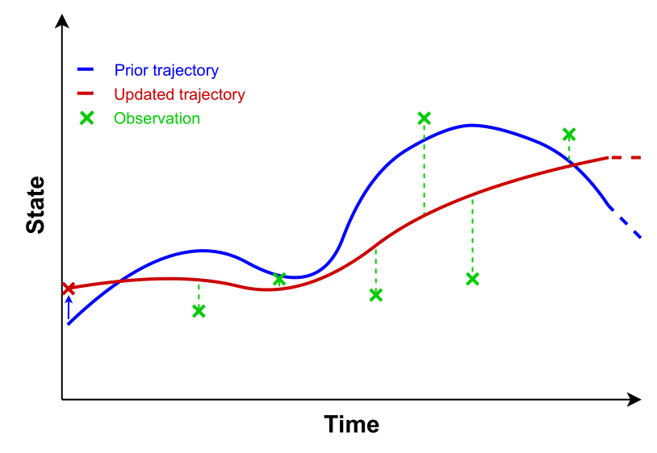

Resources
Abstract
Complex dynamical systems are found across various scientific disciplines, representing phenomena like atmospheric and oceanic behavior, brain activity, robot state in its environment, among many others. Due to the challenges that those systems may address, it is often impractical to observe their complete state, leading to the collection of partial observations. For instance, weather stations can only measure a limited number of variables like temperature and pressure, but not the entire state of the atmosphere. However, despite the limited nature of those observations, we can still use them to infer and deduce states that are consistent with the gathered data. By leveraging advanced inference methods, we can make predictions about the complete state of complex dynamical systems.
Figure 1: Data assimilation setup
References
I wanted to highlight here two fantastic papers about data assimilation using score-based models. I worked with the main author (Francois Rozet ) during my thesis and he helped me a lot for the SBM part.
The first paper draws the basics of Score-based Data Assimilation that infers full state trajectories by assimilating any differentiable observations in a zero-shot way. (link to paper )
Rozet, F., & Louppe, G. (2023). Score-based Data Assimilation. ArXiv, abs/2306.10574.
The second one is a direct application of SDA for a large scale physical problem. It shows that the method scales consistently with clever architecture engineering. (link to paper )
Rozet, F., & Louppe, G. (2023). Score-based Data Assimilation for a Two-Layer Quasi-Geostrophic Model. ArXiv, abs/2310.01853.